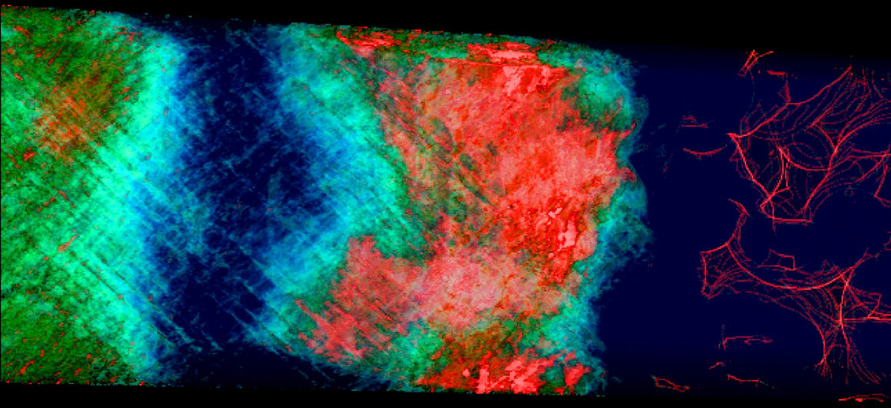

|
|
Parallel Volume Rendering

Problem Overview
Volume rendering is a visualization technique that uses
a combination of color and opacity to allow an entire three-dimensional
volume to be viewed at one time.
In a parallel setting, the technique must employ special strategies, since
each processor typically cannot generate an image for its own
data in a way that can be combined with results from other processors.
Instead, especially for unstructured data with complex overlaps
between processors, partial results must be generated that can
be merged with other processors' results to form a final image to form a final image.
Results
We have published multiple papers on this topic.
Highlights include:
- A three-dimensional rasterization technique that works on
unstructured grids and avoids issues with load balancing and sorting,
provided that a large buffer can be distributed over many processors
(Childs/EGPGV06).
- A study of how the three-dimensional rasterization technique can
be mapped onto data-parallel primitives (Larsen/EGPGV15).
- A study of how this algorithm scales at tens of thousands of
cores and on data sets of trillions of cells (Childs/CGA10).
- Two studies of the impacts of hybrid parallelism when using tens
of thousands of cores and trillions of cores (Howison/TVCG12, Howison/EGPGV10).
People
Publications
A Lifeline-Based Approach for Work Requesting and Parallel Particle Advection
Roba Binyahib,
David Pugmire, Boyana Norris,
and Hank Childs
IEEE Symposium on Large Data Analysis and Visualization (LDAV), Vancouver, Canada, October 2019
Best Paper Honorable Mention
[PDF] [BIB]
|
Volume Rendering Via Data-Parallel Primitives
Matthew Larsen, Stephanie Labasan, Paul Navratil, Jeremy Meredith, and Hank Childs
EuroGraphics Symposium on Parallel Graphics and Visualization (EGPGV), Cagliari, Italy, May 2015
[PDF] [BIB]
|
A Scalable, Hybrid Scheme for Volume Rendering Massive Data Sets
Hank Childs,
Mark Duchaineau, and
Kwan-Liu Ma
EGPGV, Braga, Portugal, May 2006
[PDF] [BIB]
|
Extreme Scaling of Production Visualization Software on Diverse Architectures
Hank Childs,
David Pugmire,
Sean Ahern,
Brad Whitlock,
Mark Howison,
Prabhat,
Gunther Weber, and
Wes Bethel
IEEE Computer Graphics and Applications (CG&A), May 2010
[PDF] [BIB]
|
Hybrid Parallelism for Volume Rendering on Large-, Multi-, and Many-Core Systems
Mark Howison,
Wes Bethel, and
Hank Childs
IEEE Transactions on Visualization and Computer Graphics (TVCG), January 2012
[PDF] [BIB]
|
MPI-hybrid Parallelism for Volume Rendering on Large, Multi-core Systems
Mark Howison,
Wes Bethel, and
Hank Childs
EGPGV, Norrkoping, Sweden, May 2010
Best Paper
[PDF] [BIB]
|
|